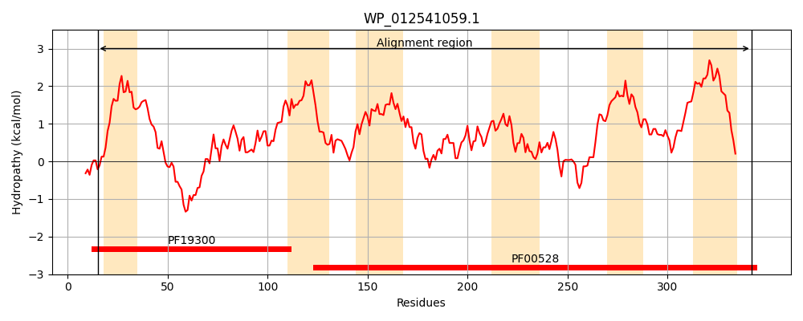
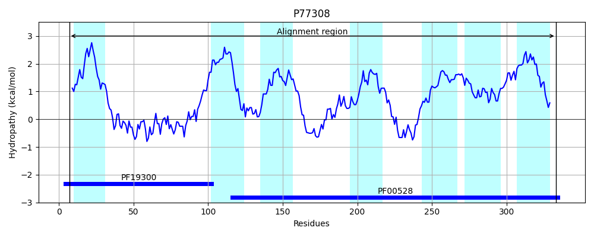
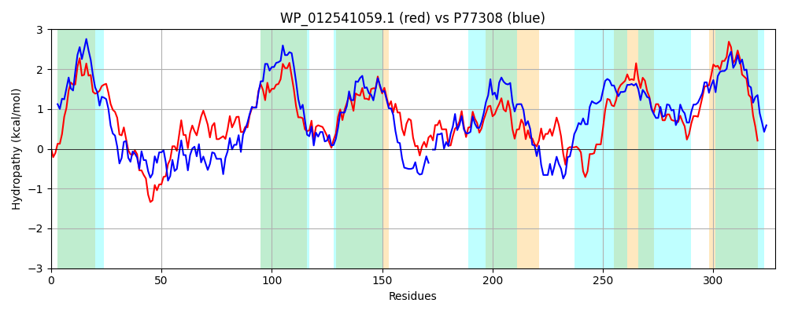

Hit Accession: P77308
Hit TCID: 3.A.1.5.38
Hit Description: gnl|BL_ORD_ID|11500 gnl|TC-DB|P77308|3.A.1.5.38 Probable D,D-dipeptide transport system permease protein DdpB OS=Escherichia coli (strain K12) GN=ddpB PE=1 SV=1
Mach Len: 328
e:0.000000
Query TMS Count : 6
Hit TMS Count: 7
TMS-Overlap Score: 5.600000
Predicted Substrates:CHEBI:72816;L-alanyl-L-alanine
BLAST Alignment:
Score: 685 , Bit scores: 268 bits, E-value: 2.9e-88, Alignment length: 328, Percentage identity: 44
Query: 15 LSKRLLQVVITLFGLLLLTFTIGRVMPIDPVLAIVGPDADQSTYQQVYQQLGFDKSLTTQFGIYFVNLLHGDLGNALLTGKPVVDDIIRVFPATMELATMAIIVGAGLGIPLGVLAAARRNSVSDYVVRIISLAGYSTPIFWVGMMGLLVFYAWLGWVGGAGRVDLGLDGVVPRRTGLMTVDALLAGNGQVFWNAINHLILPASLLGFHSLAYISRMTRSFMLAQLSQEFIITARVKGLTERQVIWNHAFRNILVQLLTVVALAYGALLEGAVLIETVFSWPGFGSYLTGSLLLGDMNAVMGCVLLVGVIFVMLNLLSDLLYQFFDPR 342
L +R +V+ + G+ ++TF I ++P DP + G A + + + QQLG D+ L QF Y +L HGDLG ++ TG+PV++++ FPAT+ELA A+++ +GIPLG+L+A RN D++VRI+++ G STP FW+G+ +++FY L + G GR+D LD TG +DALL GNG+VF+NA+ HLILPA L F L ++R RS ML QLS+++I TAR GL ++ +A N L+ +TV+ LA G LL GAVL ETVF+WPG G+++ S+ D AVMG ++V +V++NL+ DLLY + DPR
Sbjct: 7 LRQRCWGLVLVVAGVCVITFIISHLIPGDPARLLAGDRASDAIVENIRQQLGLDQPLYVQFYRYVSDLFHGDLGTSIRTGRPVLEELRIFFPATLELAFGALLLALLIGIPLGILSAVWRNRWLDHLVRIMAITGISTPAFWLGLGVIVLFYGHLQILPGGGRLDDWLDPPT-HVTGFYLLDALLEGNGEVFFNALQHLILPALTLAFVHLGIVARQIRSAMLEQLSEDYIRTARASGLPGWYIVLCYALPNALIPSITVLGLALGDLLYGAVLTETVFAWPGMGAWVVTSIQALDFPAVMGFAVVVSFAYVLVNLVVDLLYLWIDPR 333 | Protein Hydropathy Plots: |
|---|
|  |  |
Pairwise Alignment-Hydropathy Plot:
|
|---|
|  |